机架
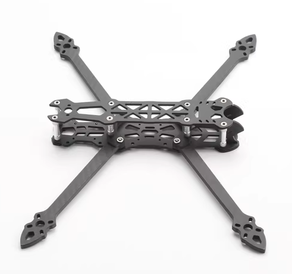
用途
机架就像节肢动物的外骨骼一样，主要对穿越机起支撑和保护的作用。市面上的机架大多是使用碳纤维制造的，重量轻，强度大。主要分为竞速和花飞两种类型。竞速机架机身一般偏小，机臂细，动力足，侧重于速度快。花飞机架可容纳较多的电子元件，有更多空间可以安装额外的功能模块，一般侧重于长续航。
尺寸
机架大小用"轴距"来表示，轴距就是对角的两个电机旋转轴之间的间距。
但现在更多的人喜欢叫“X寸机”，不过这里的“寸”指的不是机架的大小，而是其匹配的螺旋桨的大小。
举例来说，一架飞机是为了飞5寸桨而设计的，他就会被称为5寸机。目前，5寸和7寸机架是用户数量最多的。下面为轴距和尺寸的关系。
| 机架轴距 |
桨叶尺寸 |
| 150mm及以下 |
3寸及以下 |
| 180mm左右 |
4寸 |
| 210mm左右 |
5寸 |
| 250mm左右 |
6寸 |
| 350mm左右 |
7寸 |
| 450mm及以上 |
8寸及以上 |
类型
穿越机机架有正X、长X、涵道、Hybrid、X8、Y3、Y6等类型，以下仅对常见的类型做出说明
正X型机架
描述：机架的每个轴之前的夹角都呈垂直90°，机臂长度一样。
特性：性能均衡，重心集中，这种机架每个面的旋转力距都相等，飞起来比较平稳，操作感强。
宽X型机架
描述：如果左右两边电机的间距大于前后电机间距，叫宽X。
特性：俯仰灵敏、横滚柔和，适合花飞。
长X型机架
描述：如果左右两边电机的间距小于前后电机间距，叫长X。
特性：俯仰柔和、横滚灵敏，适合高速比赛。
涵道机架
描述：一般也称为“圈圈机”，用圈圈来形成一个风流动的管道，可以提高升力，同时也增加的重量(这里是需要一个权衡)。
特性：螺旋桨外部有圆圈做保护，可有效降低炸机损失。同时，若撞到人，圆圈也可以在一定程度上保护人体不受伤害。
飞行控制器
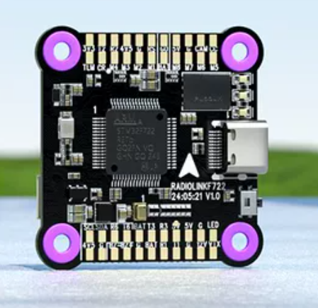
飞行控制器（Flight Control），简称飞控（FC）。 是飞行器行为控制的核心部件，飞行器的姿态控制、数据回传等都是由飞控进行控制。
目前，主流的穿越机飞控均是以STM32为主控芯片，性能由低到高主要为F4系列,F7系列,H7系列。最近市面上也出现了以国产AT32芯片为主控的穿越机飞控，其性能介于STM32F4和STM32F7之间。
一般来说主控性能越高飞行就越稳定。对于新手来说，STM32F4系列飞控已经完全够用。
电子调速器
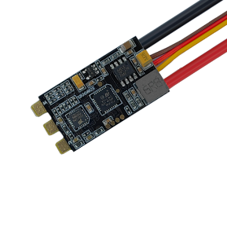
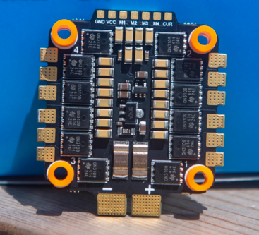
电子调速器（Electronic Speed Controller），简称电调（ESC）。
是穿越机动力的控制核心。按控制的电机类型可分为有刷电调和无刷电调两大类，本文档中仅对5寸穿越机常见的无刷电调做出说明，提到的电调默认为无刷电调。
按集成程度可分为：分体式电调，四合一电调。
分体式电调也称为单体电调，即一块电路板上仅有一个电调，仅能控制一个电机。四合一电调则是一块电路板上集成了4个电调，可控制4个电机。
四合一电调在组装方便等特性上远优于分体电调，已经成为穿越机电调的主流。
按承受电压可分为：1S，2S，3S，4S等。
电压会直接影响电机的最大转速，意味着电压越高，最大动力越高。S指的是电池串联数量，后面电池章节会做出说明。
现在的穿越机电调一般为2-6S的宽电压电调，所以基本不会遇到电池电压和电调不匹配的情况。
按承受电流可分为：20A、45A、60A等。
标定的是额定电流，即能够在此电流下仍然稳定工作。电调的承受电流直接影响电机能发挥出多少性能，电机载荷越大，电流越大。若电调承受电流能力不足，则会烧毁。
按电调固件可分为：Bluejay、BLHeli_S、AM32等。
不同的固件因为控制逻辑不同，所以手感会略有差异。但在新手阶段可直接无视。
按协议可分为：PWM、oneshot、dshot等。
需要选择飞控和电调都支持的协议才能正常控制电机，在支持dshot的情况下优先选择dshot。
AIO飞控
一种将飞控和四合一电调集成在一起的电路板。优势是体积小，缺点是功率一般偏小。
电机
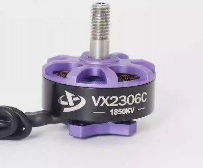
电机直接带动螺旋桨，为穿越机提供动力。
可分为有刷电机和无刷电机两大类，本文档中仅对穿越机常见的无刷电机做出说明，提到的电机默认为无刷电机。
- 按尺寸可分为：2515，2306，2808等。
尺寸指的是电机转子的尺寸。
- 按转速可分为：900KV，1800KV，2450KV等。
KV的含义是电压每增加1V，电机增加的转速。如900KV的电机在1V电压下最大转速为每分钟900圈，在2V电压下为每分钟1800圈。
桨叶
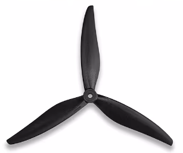
利用推动空气的反作用力为穿越机提供动力的部件。
图传
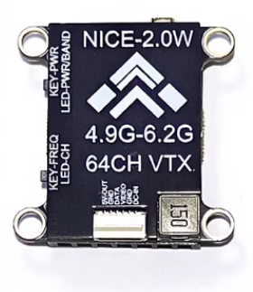
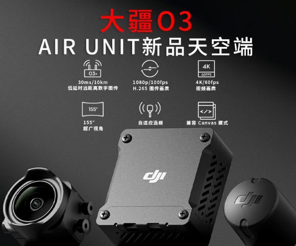
图传将摄像头拍摄的画面回传至地面，飞手通过显示器或眼镜等观看画面。
主要分为模拟图传和数字图传两类
- 模拟图传
使用CVBS信号，电路结构简单，成本低，配对简单，画面延迟低，但是画面质量较低。
- 数字图传
画面质量高，但摄像头和画面接收装置一般仅能和自家产品配对且价格高昂。例如DJI O3图传售价约1200CNY，足够买10个中上水平的模拟图传。且仅能和自家的飞行眼镜配对，和其他品牌的飞行眼镜无法配对。
摄像头
摄像头负责拍摄画面并传送至图传，主要分为模拟和数字两类
- 模拟摄像头
使用CVBS信号，结构简单，成本低，兼容性好，但是画面质量较低。
- 数字摄像头
画面质量高，但一般仅能连接自家的图传。
接收机
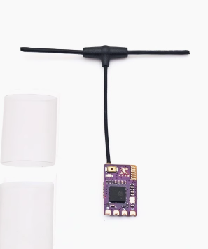
用于接收遥控信号并转发至飞控。
- 按无线协议可分为：ELRS接收机、SBUS接收机等
现在最常用的是ELRS接收机，选购时应优先选择。
- 按和飞控的通信方式可分为：串口接收机、SPI接收机、PPM接收机等
应优先选择串口接收机，ELRS接收机就是串口接收机的一种。
- 按无线频率可分为：2.4G接收机、915M接收机等
应优先选择2.4G接收机。 915M频段在国内不合法。
舵机
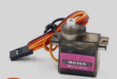
舵机(Servo)是一种在程序的控制下，可在一定范围内连续改变输出轴角度并保持的伺服电机。
- 按旋转角度可分为：180度舵机、360度舵机等，常用180度舵机。
- 按内部控制逻辑可分为：模拟舵机、数字舵机。
模拟舵机的控制电路为模拟电路，需要一直发送控制信号才能转到指定位置；响应速度慢；数字舵机的控制电路加入了微控制器，只需要发送一次目标信号即可到达指定位置；有些还有信息反馈等功能；
- 按材质可分为：塑料齿舵机、金属齿舵机等。
塑料齿舵机重量轻，价格便宜，但扭矩较小；金属齿舵机结实耐用，扭矩更大，但价格更贵。
- 按控制接口可分为：PWM舵机、总线舵机等。
PWM舵机是传统航模控制方式，控制简单，MCU都可以产生控制；总线舵机采用总线通信方式进行控制，支持信息反馈，控制信号有所优化，使用在控制精度高的场合；
定位模块
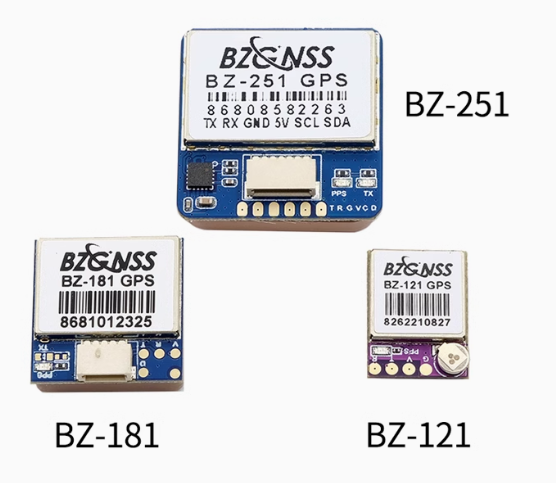
利用卫星定位系统获得自身位置的外设。虽然一般称为GPS，但现在很多模块还可以使用北斗、伽利略等卫星定位系统。
{% endblock %}